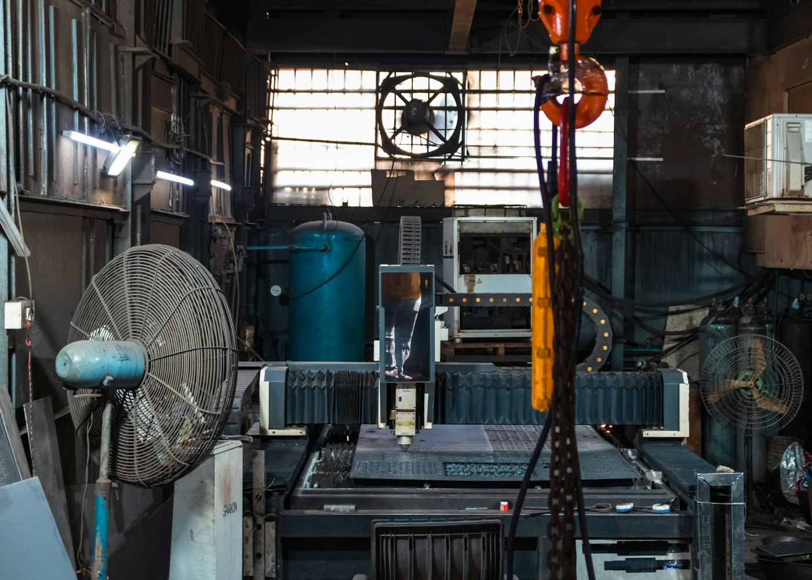

Caldeiraria industrial
Fabricação e adequação de peças e conjuntos metálicos.
SOLUÇÕES INDUSTRIAIS • PROJETOS SOB MEDIDA
Caldeiraria, estruturas metálicas, montagem e manutenção para projetos industriais que pedem execução coordenada.
O que fazemos
Conheça as opções e escolha o que faz sentido para você.
Fabricação e adequação de peças e conjuntos metálicos.
Soluções dimensionadas para cada projeto.
Instalação coordenada com a rotina da operação.
Intervenções planejadas para preservar a continuidade.
Preparação de superfície e acabamento técnico.
Detalhamento e fabricação conforme o escopo definido.
Nossa essência
A Vértice reúne planejamento técnico e execução para apoiar empresas em melhorias, novas instalações e manutenção. Cada escopo começa com uma conversa sobre necessidade, ambiente e prazo.
Por dentro
Imagens ilustrativas do universo deste projeto.


Como funciona
Levantamos objetivo, local e restrições da operação.
Definimos escopo, etapas e condições de execução.
Coordenamos a implantação e conferimos o resultado.
Antes de começar
Sim. A proposta depende de levantamento técnico e das necessidades da operação.
Sim. O cronograma é discutido conforme a janela disponível e o escopo.
O formato de avaliação é definido após o primeiro contato.
Em destaque
Entendimento do ambiente, das medidas e das necessidades da equipe.
Peças e conjuntos produzidos conforme o projeto aprovado.
Montagem e conferência com atenção ao funcionamento da operação.
Vamos conversar
Deixe seus dados para simular o contato ou fale agora com nossa equipe.
Conversar no WhatsApp ↗